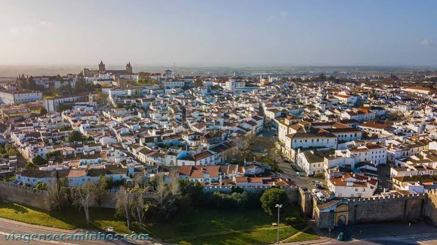

Turismo na cidade de Évera
História
Évora é uma das joias de Portugal, localizada na região do Alentejo, repleta de obras arquitetônicas e culturais. É uma cidade museu, cercada por uma muralha, declarada patrimônio mundial pela Unesco em 1986.A cidade de Évora foi fundada em 1166, com suas raízes que datam dos tempos dos romanos. Viveu sua era dourada no século XVI, quando foi residência de reis portugueses. Possui pouco mais de 50 mil habitantes e é um dos mais ricos em monumentos de Portugal.
Um dos principais destaques de Évora Portugal é a Capela dos Ossos, com suas paredes decoradas com ossos humanos. Outras atrações importantes são a Sé de Évora, o Aqueduto Água de Prata, as ruínas Romanas. Classificado como Patrimônio Mundial desde 1986, o centro histórico de Évora é um dos mais ricos de Portugal. Dividimos as atrações em pontos turísticos em geral, igrejas e museus, confira!
A jóia do Alentejo
